1. 01-calm-today
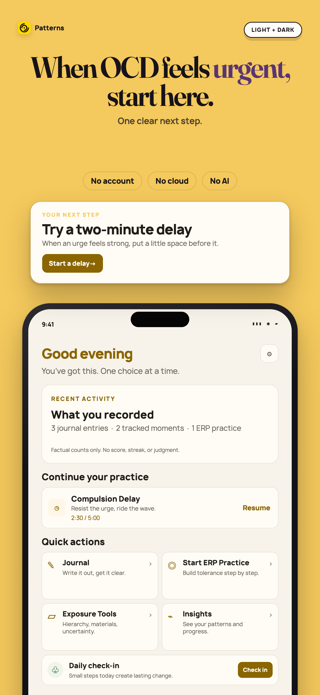
Apple 1290×2796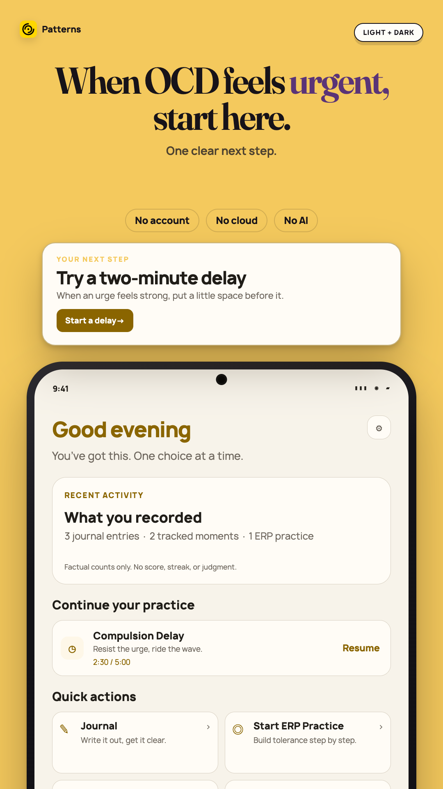
Play 1080×1920Patterns Today screen with factual activity counts and a two-minute compulsion delay action.
2. 02-delay-the-urge
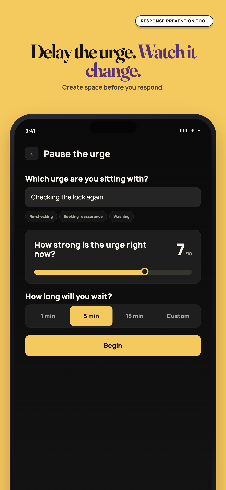
Apple 1290×2796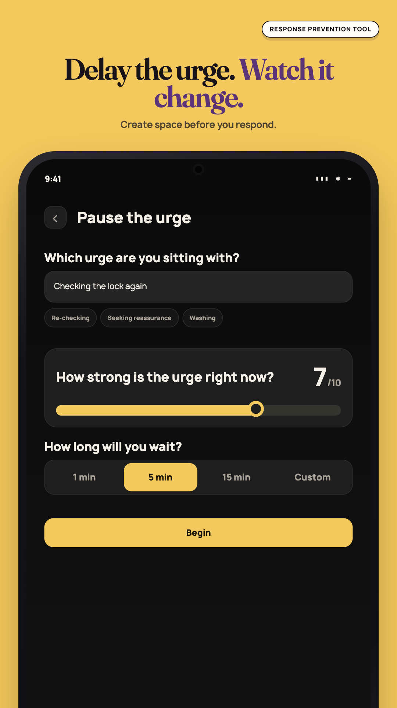
Play 1080×1920Compulsion Delay setup with an urge description, user-recorded intensity, and wait duration.
3. 03-build-your-exposure-ladder
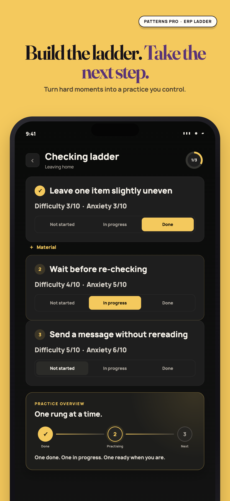
Apple 1290×2796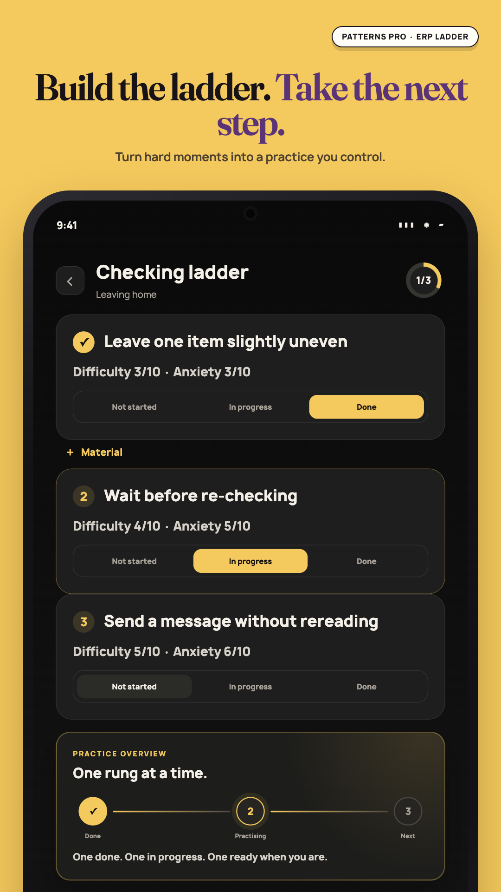
Play 1080×1920Exposure ladder with three user-created steps and text labels for each practice state.
4. 04-see-patterns-not-judgments
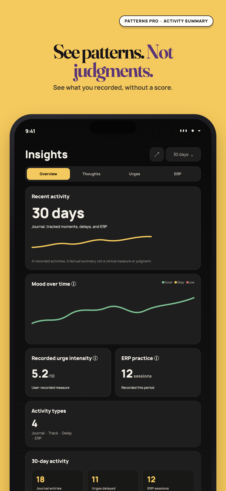
Apple 1290×2796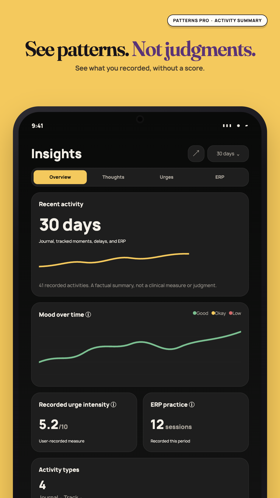
Play 1080×1920Calm Insights with factual journal, delay, and ERP activity counts and no score or streak.
5. 05-no-ai-to-ask
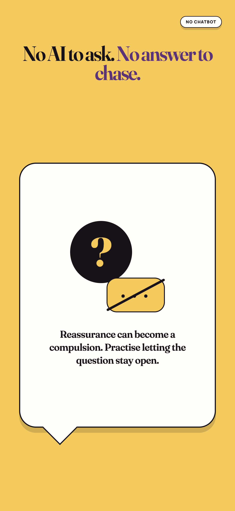
Apple 1290×2796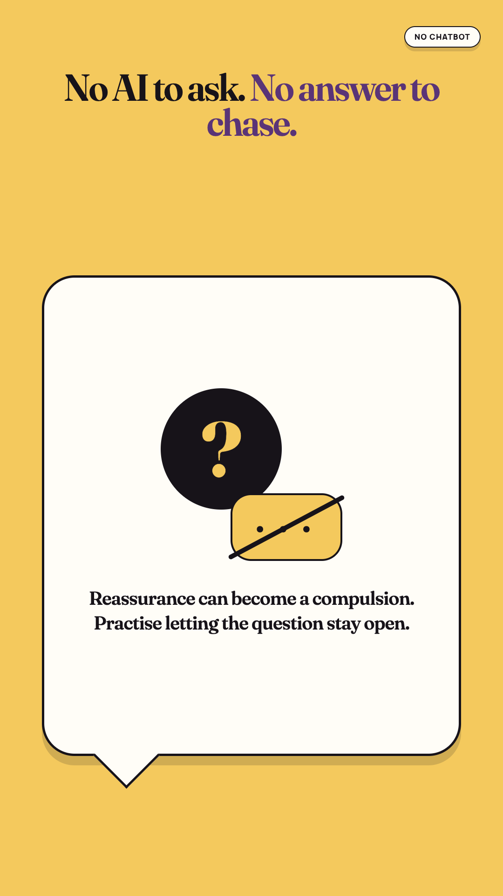
Play 1080×1920No chatbot message explaining that Patterns does not provide reassurance on demand.
6. 06-nothing-leaves-your-phone
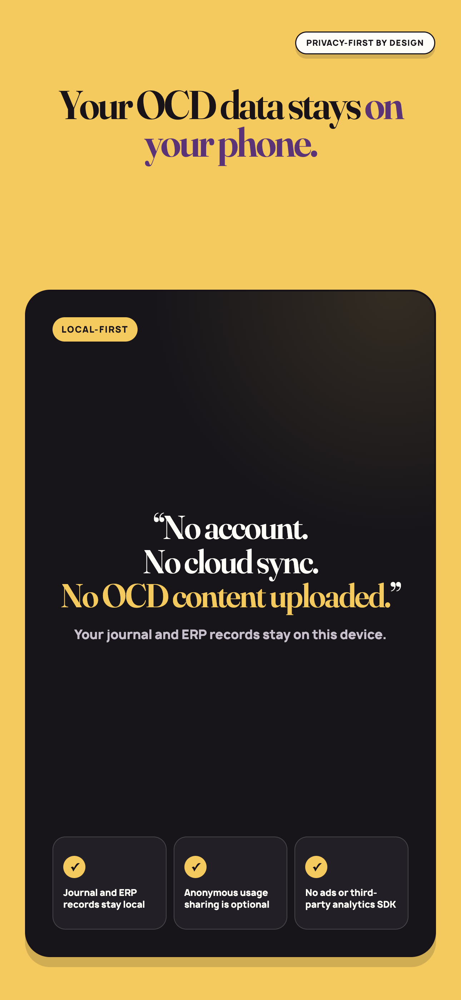
Apple 1290×2796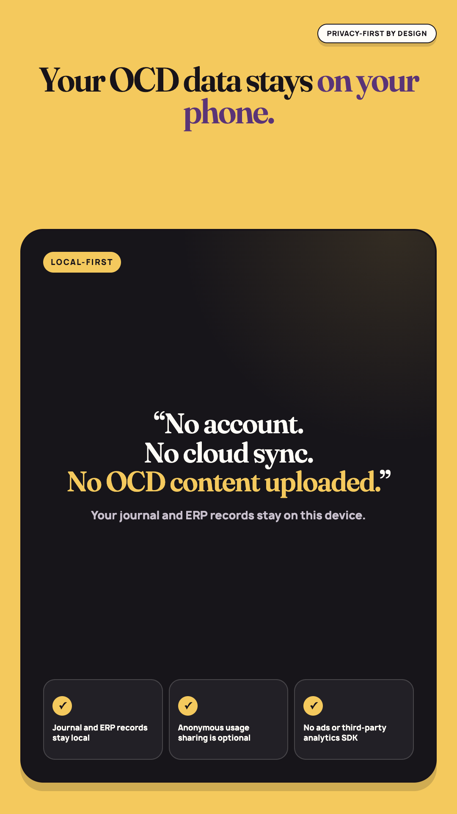
Play 1080×1920Privacy card stating that journal and ERP records stay on the device unless manually exported.
7. 07-private-journaling
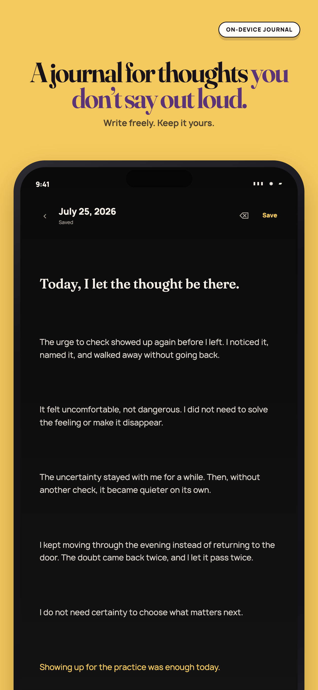
Apple 1290×2796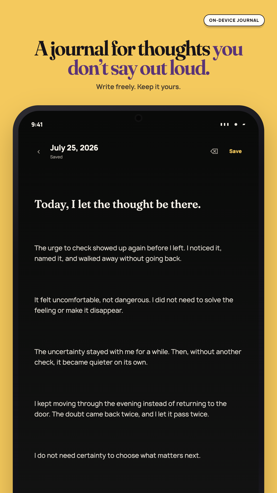
Play 1080×1920Private on-device journal editor with saved status and formatting controls.
8. 08-patterns-pro
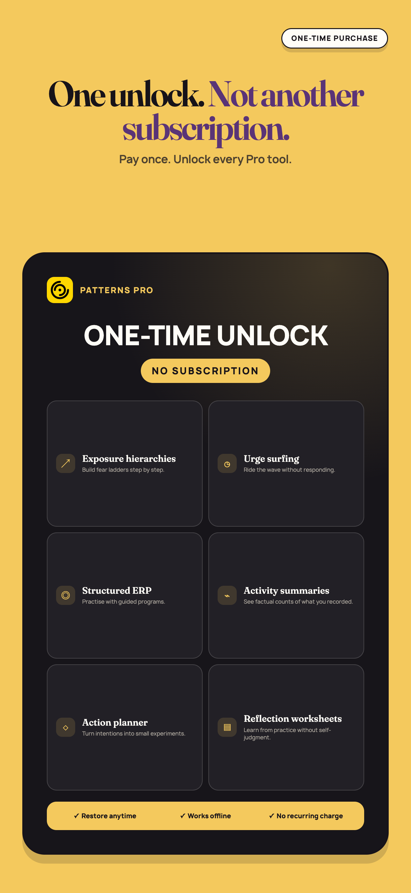
Apple 1290×2796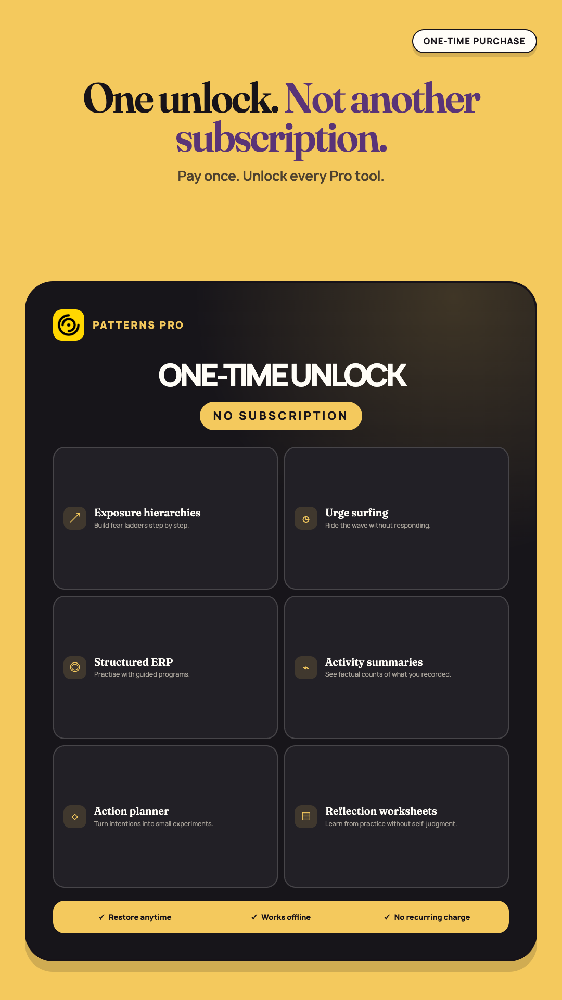
Play 1080×1920Patterns Pro one-time purchase with a list of included self-help and reflection tools.
Google Play feature graphic
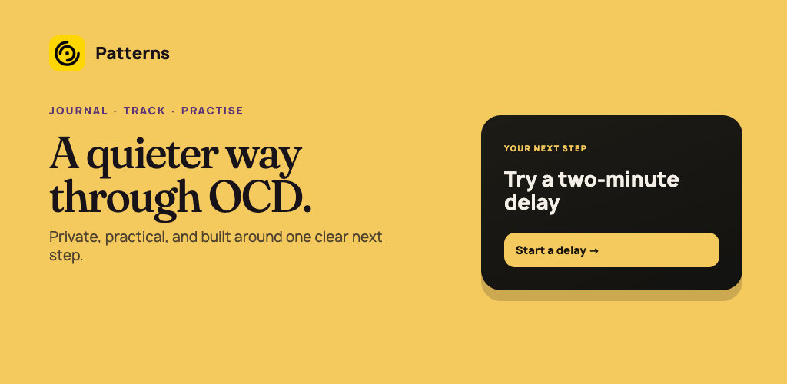
Play 1024×500A quieter way through OCD. Private, practical, and built around one clear next step.